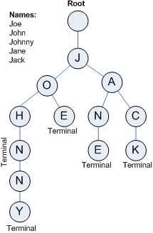

트라이
1. 클래스

2. 특징
- 정렬된 트리 구조이다.
- 자식노드를 맵<key, value> 형태로 가지고 있다.
- 루트를 제외한 노드의 자손들은 해당 노드와 공통 접두어를 가진다.
3. 선언
1
2
3
4
5
6
7
8
9
10
11
12
13
14
15
16
17
18
19
20
21
22
23
24
25
26
27
28
29
30
31
32
33
34
35
36
37
import java.util.HashMap;
/**
*
* @author HEESOO
*
*/
class Trie{
Node root;
public Trie() {
this root=new Node();
}
public void insert(String word) {
Node node root;
for(int i=0;i<word.length();i++) {
node.count++;
node=node.children.computeIfAbsent(word.charAt(i), c->new Node());
}
}
public int getCount(String query) {
Node node=root;
for(int i=0;i<query.length();i++) {
if(!node.children.containsKey(query.charAt(i))) return 0;
node=node.children.get(query.charAt(i));
}
return node.count;
}
}
class Node{
HashMap<Character, Node> children;
int count;
public Node(){
this.children=new HashMap<>();
this.count=0;
}
}
4. 주요 메소드
Node- 자식노드는 HashMap에 저장된다.
- 현재 노드까지의 같은 접두사를 가지는 노드의 개수를 count에 저장한다.
public void insert(String word)- 역할: word를 트라이에 저장한다.
- computeIfAbsent()를 통해 word.charAt(i)가 node.children에 없다면 해시맵에 넣은 후, 해당 노드로 이동한다.
public int getCount(String query)- 역할: query가 존재한다면, 그 개수를 리턴한다.
7. 참고
- [자료구조] Trie(트라이)-1 : 기초 개념 https://the-dev.tistory.com/2
- [자료구조] Trie(트라이)-2 : 자바로 구현하기 https://the-dev.tistory.com/3
- 코딩테스트 연습 2020 KAKAO BLIND RECRUITMENT 가사 검색 https://programmers.co.kr/learn/courses/30/lessons/60060
- (코테에 쓴 코드를 복붙한 거라 해당 코드는 정석이 아니다.)